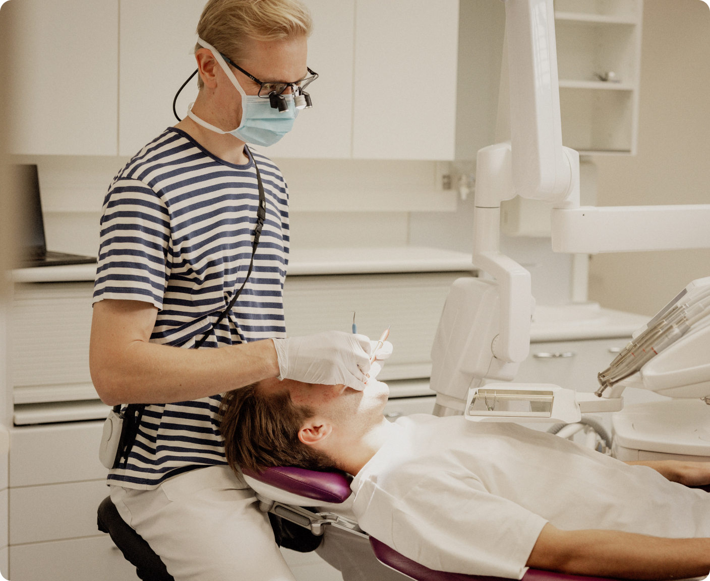
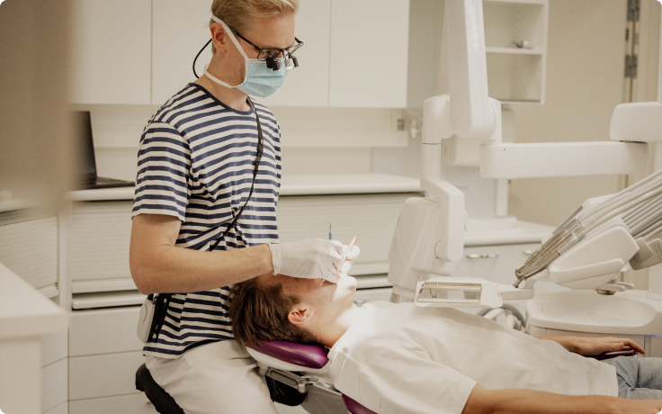
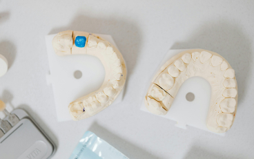
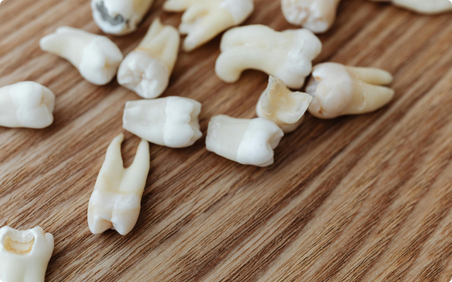
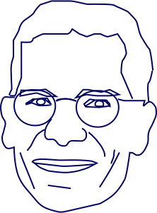

Hammastarkastus - Ei yllätysmaksuja
Sisältää tarvittavat röntgenkuvat. Ei toimistomaksua. Ilmainen pysäköinti.

Sisältää tarvittavat röntgenkuvat. Ei toimistomaksua. Ilmainen pysäköinti.
Eemeli 32v

Huolellinen suun terveydentilan kartoitus. Sisältää tarvittavat röntgenkuvat
ei yllätysmaksuja

Paikkaushoito tehdään huolellisesti ja omaa hammasta säästäen
ei yllätysmaksuja

Vaivaa viisurissa? Poistot ja leikkaukset 10 vuoden kokemuksella.
ei yllätysmaksuja
Olen yleishammaslääkäri Juhani.
Työkokemusta on kertynyt kohta kymmenen vuotta, josta valtaosa yksityishammaslääkärinä. Tällä hetkellä työskentelen ammatinharjoittajana Verkahampaassa ketjuihin kuulumattomalla vastaanotolla. Sen lisäksi leikkaan opiskelijoiden viisaudenhampaita Turun YTHS:llä.
Tavoitteenani on toteuttaa laadukasta perushoitoa - siis tarkastukset, paikkaukset, puhdistukset yms.- mahdollisimman hyvin ja huolellisesti. Sillä pyritään vähentämään suurempien ja kalliimpien hoitojen tarvetta.
